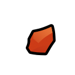
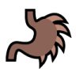

Pyrinth Eye
Beautiful eye powered by hypnotic Pyrinth crystals. Grants social advantages and the ability to seduce pawns, influencing prisoners and slaves.
Requires: Pyrinth bionics, Bionic replacements
| 15 | Plasteel |  |
| 4 | Advanced Component |  |
| 50 | Pyrinth |  |
Crafting 6
- +1 PawnBeauty
- +15% SocialImpact
- Comfy Temperature: -3°C to -6°C
- Pyrinth Heat Capacity: +5
- Pyrinth Heat Generation: +0.1/s
- Ability: Pyrinth Seduction (Pyrinth Heat Cost: 50)
Pyrinth Arm
Bionic arm powered by Pyrinth crystals. Unleashes stored heat to cauterize bleeding wounds, turning them into burns.
Requires: Pyrinth bionics, Bionic replacements
| 15 | Plasteel | |
| 4 | Advanced Component | |
| 50 | Pyrinth |
Crafting 8
- Comfy Temperature: -5°C to -10°C
- Pyrinth Heat Capacity: +10
- Pyrinth Heat Generation: +0.5/s
- Ability: Cauterize Bleeding Wounds (Pyrinth Heat Cost: 50)
Pyrinth Leg
Bionic leg powered by Pyrinth crystals. Uses stored heat to superheat water, creating a jet for powerful jumps.
Requires: Pyrinth bionics, Bionic replacements
| 15 | Plasteel | |
| 4 | Advanced Component | |
| 50 | Pyrinth |
Crafting 8
- Comfy Temperature: -5°C to -10°C
- Pyrinth Heat Capacity: +10
- Pyrinth Heat Generation: +0.5/s
- Ability: Steam Jump (range: 20 tiles, Pyrinth Heat Cost: 50)
Pyrinth Liver
Bionic liver infused with Pyrinth. Purifies blood in one fell swoop, burning off contaminants, diseases, and parasites.
Requires: Pyrinth bionics, Bionic replacements
Anomaly DLC: May trigger Metal Horror, so use with care in case of Metal Horror outbreak.
| 15 | Plasteel | |
| 4 | Advanced Component | |
| 50 | Pyrinth |
Crafting 6
- Comfy Temperature: -3°C to -6°C
- Pyrinth Heat Capacity: +5
- Pyrinth Heat Generation: +0.1/s
- Ability: Pyrinth Liver Purge (cooldown: 1 day, Pyrinth Heat Cost: 50)
- Removes: Lung Rot, Scaria, Gut Worms, Muscle Parasites, etc. and many moded infections
- Reduces severity of: Infections, Diseases, Carcinoma, Toxic Buildup, etc. and many moded infections

Pyrinth Stomach
Bionic stomach lined with Pyrinth that sterilizes food, making digestion more efficient by cooking ingested matter.
Requires: Pyrinth bionics, Bionic replacements, Artificial metabolism Royalty DLC Required
| 15 | Plasteel | |
| 4 | Advanced Component | |
| 50 | Pyrinth |
Crafting 6
- Comfy Temperature: -3°C to -6°C
- Pyrinth Heat Capacity: +5
- Pyrinth Heat Generation: +0.1/s
- Hunger Rate: -10%
- Food Poisoning Chance: -90%
- Immunity to: Gut Worms and other modded gastrointestinal diseases